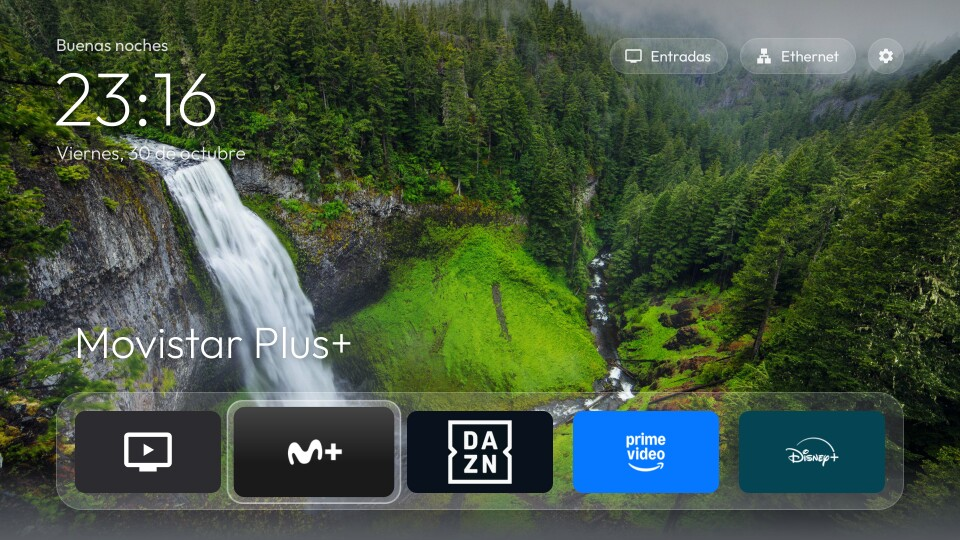

QuickAccess TV en LG webOS

En LG se instala como app del Modo Desarrollador. No hace falta root y no se modifica nada del
sistema. Id de la app: com.quickaccesstv.app.
Probado en: webOS TV 7.6.0 (webOS 22), con @webos-tools/cli 3.2.6.
Requisitos
- Tele LG con webOS y la app Developer Mode de la LG Content Store (necesita una cuenta gratuita de LG Developer).
- PC en la misma red que la tele, con Node.js y bash (en Windows sirve Git Bash).
1. Activar el Modo Desarrollador en la tele
- Instala Developer Mode desde la LG Content Store y ábrela.
- Inicia sesión con tu cuenta de LG Developer y activa Dev Mode Status. La tele se reinicia.
- Vuelve a abrir Developer Mode y activa Key Server. Anota la IP que muestra.
2. Preparar el PC
cd lg-webos
npm install # herramientas ares de LG, solo la primera vez
npx ares-setup-device # añade un dispositivo llamado "lgtv":
# IP de la tele, puerto 9922, usuario prisoner
npx ares-novacom --device lgtv --getkey # pide la frase que aparece en Developer Mode
3. Instalar
./build-and-install.sh # solo la app
WATCHDOG=1 ./build-and-install.sh # la app con HomeWatchdogService (opcional, ver abajo)
Monta la interfaz común (../web) junto con la capa webOS, crea el .ipk, lo instala y abre la app.
La primera vez, la tele pide permiso para que la app vea la lista de aplicaciones: acéptalo.
Para tenerla a mano, colócala la primera de la barra de LG: pulsa la casita, mantén OK sobre QuickAccess TV y muévela al principio.
Mantener la sesión del Modo Desarrollador
LG desactiva el Modo Desarrollador cuando caduca la sesión (hasta 1000 h). Se puede renovar con el botón Extend de la app Developer Mode o desde el PC:
# Una vez: guarda el token de la sesión (por SSH a la tele, con la clave de ares-novacom)
LG_HOST=<ip-de-la-tele> LG_ASKPASS=<script-que-imprime-la-frase> \
tools/lgsh.sh 'cat /var/luna/preferences/devmode_enabled' | tr -d '\r\n ' > tools/.devmode-token
tools/extend-devmode.sh # renueva a 1000 h
tools/extend-devmode.sh --check # muestra el tiempo restante
En Windows también existe tools\extend-devmode.ps1. El token es personal: .gitignore lo excluye.
HomeWatchdogService (opcional): la casita abre QuickAccess TV
webOS no permite cambiar lo que abre la casita del mando. Con WATCHDOG=1 se instala junto a la app un
servicio JS que vigila por SSAP qué app está delante y, cuando aparece la barra de LG, vuelve a abrir
QuickAccess TV, sin root. Cómo funciona y qué se descubrió de webOS por el camino:
docs/home-watchdog.md.
| Acción | Resultado |
|---|---|
| Pulsar la casita | Vuelve a QuickAccess TV en unos 0,7 s; durante 5 s un aviso recuerda que otra pulsación lleva al menú de LG. |
| Pulsar la casita otra vez con la app ya de vuelta | Se queda la barra de LG, con un aviso de que la vuelta automática está en pausa. |
| Abrir QuickAccess TV a mano | Se reactiva. |
| Encender la tele | QuickAccess TV se abre sola y la vuelta automática se reactiva. |
El servicio se arranca la primera vez que se abre la app y después se mantiene solo, también tras
apagar y encender la tele. Para quitarlo, reinstala sin WATCHDOG=1.
Lo que webOS no permite
- Sin el servicio, la casita del mando siempre abre la barra de LG; QuickAccess TV se abre desde ahí.
- No se pueden desactivar apps del sistema.
Desinstalar
./uninstall.sh
Sin PC: en la barra de LG, mantén OK sobre QuickAccess TV y elige Eliminar.
Desarrollo
node tools/capture.js <ip-de-la-tele> capturas/inicio.jpgabre QuickAccess TV y guarda una captura real de la pantalla de la tele (Node 22 o superior). La primera vez la tele pide aceptar un emparejamiento; la clave queda entools/.ssap-client-key, excluida del repo.tools/receiver.pyrecibe registros y capturas de la tele enlogs/; actívalo condebugReportenweb/js/config.js.tools/shot.sh <nombre> [TECLAS]abre la app, simula teclas del mando y guarda una captura de la página enlogs/(necesitareceiver.pyen marcha ydebugReportconfigurado). webOS no deja leer los iconos de las apps desde la página, así que en esa captura aparecen sus nombres en lugar de los iconos.